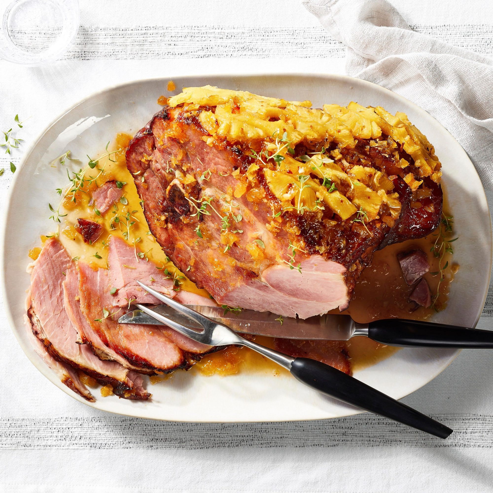

Ham Recipe

Description
Preparing a whole ham sounds intimidating, but this classic holiday main
is as easy as it is impressive. Learn everything you need to know to cook
a whole ham for special occasions like Christmas and Easter.
Ingredients
- Ingredients for Chef John's Honey-Glazed Ham
- Roasting pan with rack
- Instant-read thermometer
- Optional: Kitchen torch
Steps:
- Preheat oven to 325 degrees F.
-
Pour water, star anise, and cloves into the bottom of a roasting pan.
Place a roasting rack on top.
-
Place ham on the rack. Cut 1/4-inch deep slashes 1/2-inch apart
lengthwise and crosswise across the top of the entire ham.
-
Bake ham in preheated oven for 20 minutes. Meanwhile, whisk together the
glaze.
-
Brush glaze over the ham, repeating every 20 minutes until the glaze is
golden-brown and the internal temperature reads 130 degrees F (the
temperature will continue to rise for a little while after its out of
the oven).
-
For a caramelized finish, either broil the ham for a few additional
minutes, or remove from the oven and use a kitchen torch to heat the
glaze until caramelized, about 2 to 5 minutes.